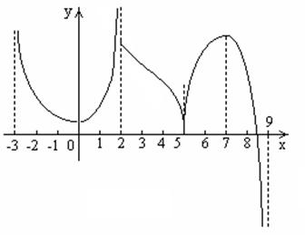
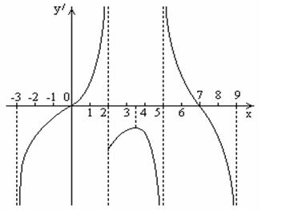
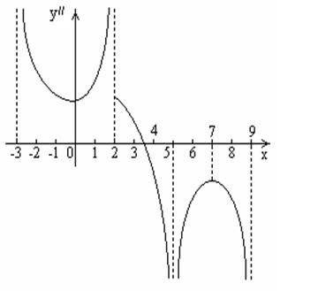

П 19 ТУ№1.
По данному графику функции  постройте вид графиков .
постройте вид графиков .
постройте вид графиков .
Решение:
1) На интервале  убывает,
убывает,  ,
, .
,
, .
убывает, ,
, .2) На интервале возрастает,  ,.
,.
возрастает, ,.3) На интервале убывает, ,
.
убывает, ,
.4) .
5) На интервале возрастает, , на интервале убывает,
. Эти соображения позволяют построить
примерный график  .
.
возрастает, , на интервале убывает,
. Эти соображения позволяют построить
примерный график .6)

Та же последовательность действий, примененная
к графику функции , дает примерный
график второй производной .
, дает примерный
график второй производной .